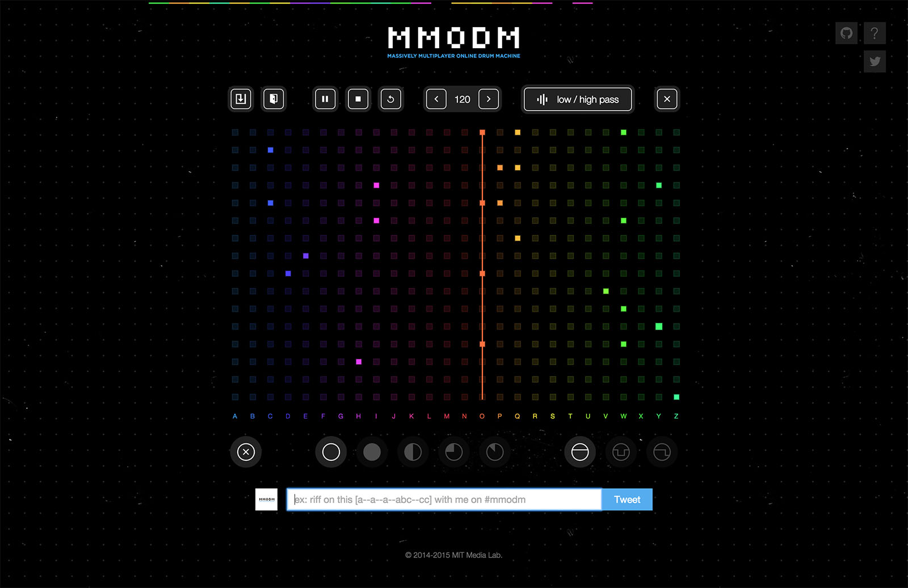
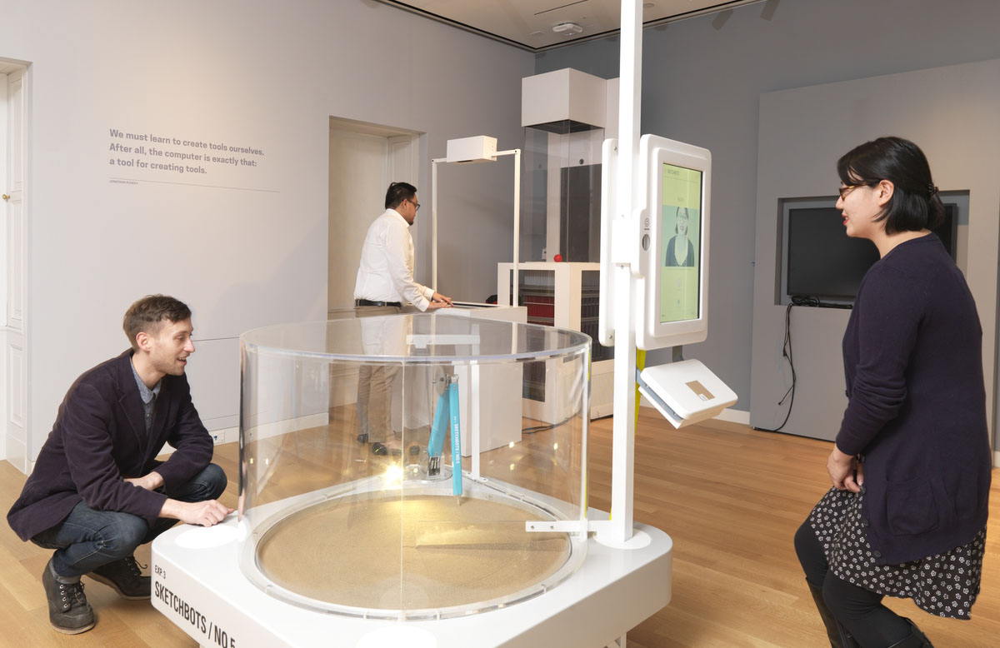
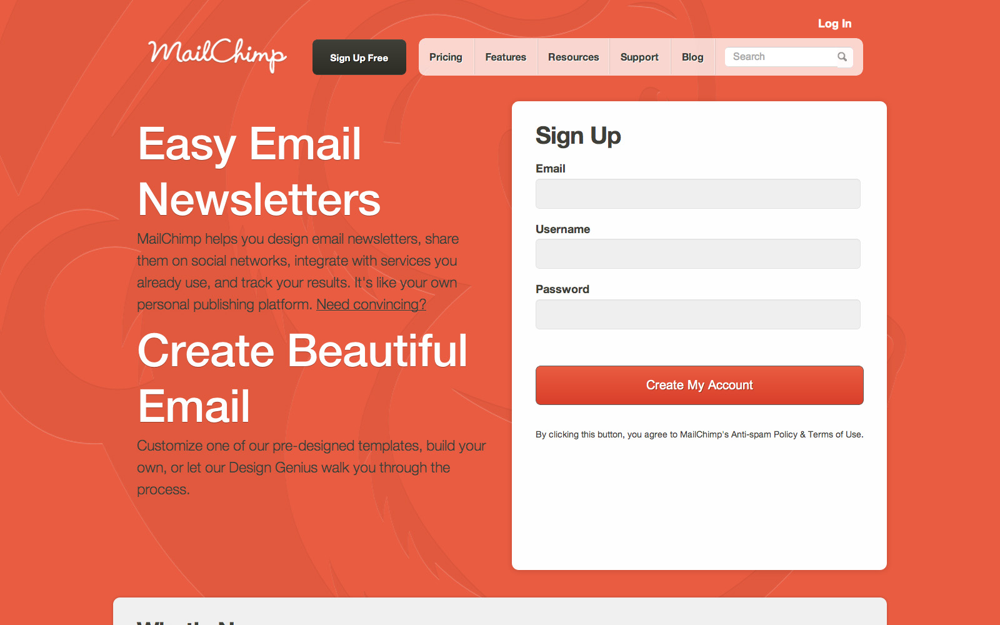

MMODM: Massively Multiplayer Online Drum Machine
MMODM is an online drum machine created by me and my friend Donald Derek for the New Paradigms in Musical Instruments class at the Media Lab. It's based on the Twitter streaming API, using tweets from around the world to create musical sequences and enable people to jam together remotely. We both contributed heavily to the design and javascript underbelly, which you can explore on Github, and you can view the site at http://mmodm.co/
Google Hangouts: Effects

I worked with Google on the realtime chat team to design and prototype new interfaces, applications, and features to bring magic and fun to Google+ Hangouts. The launch of the Effects app and my work on notifications are some bits of that work released to the public.
Google: Sign-in

The project had the most unforeseen depth I've ever worked with, and quickly grew from just updating the look of the sign in page to working on designs for recaptcha, a popup version of signin, the oauth dialogue, sign up, and mobile versions of all of the above. As seen on The Next Web.
Cooper Hewitt Museum: inFORM Touch UI
I worked with Philipp Schoessler, Jared Counts, and the rest of the Tangible Media crew to design the touchscreen interface and interactions for our inFORM shape display piece in the new Tools exhibit at the redesigned Cooper Hewitt Museum.
We began with early wireframes and progressed from there. I created a mixture of static mockups, html prototypes, and code-ready assets to aid in development and communication. You can use the final system at the museum until May 25, 2015 or take a peak at one person's experience on Instagram
Mailchimp: Homepage Experiments

- 


While at Mailchimp, I used Google Analytics heavily in order to begin analyzing the traffic patterns of the marketing pages of the site like the homepage in order to propose, design, and then test new directions. I also redesigned and coded a new version of their AlterEgo site to center around their new mobile applications.